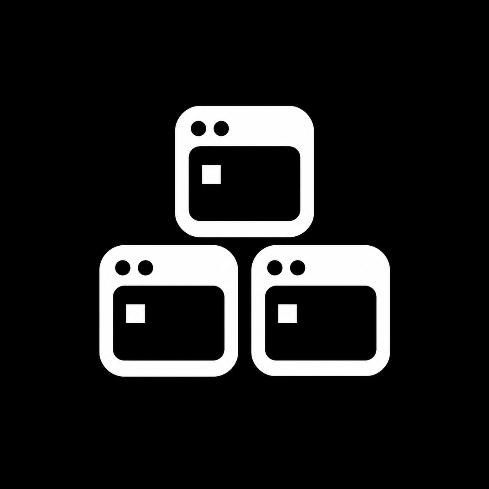
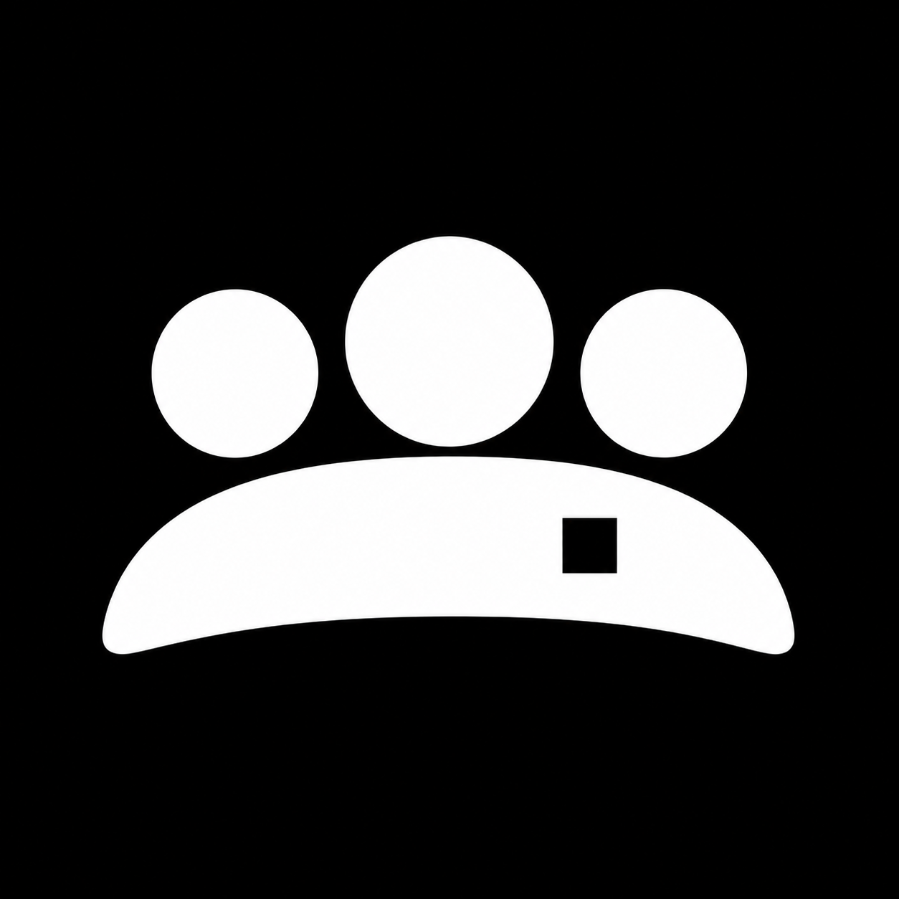
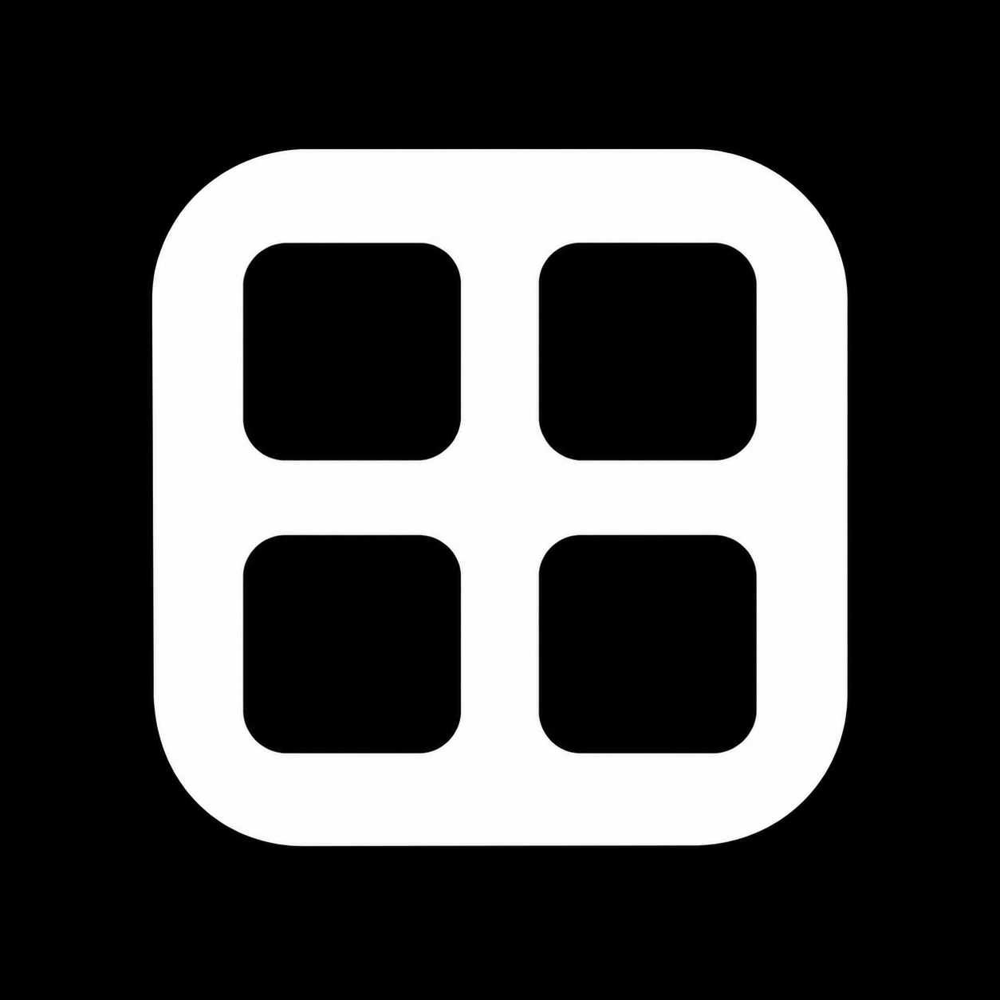
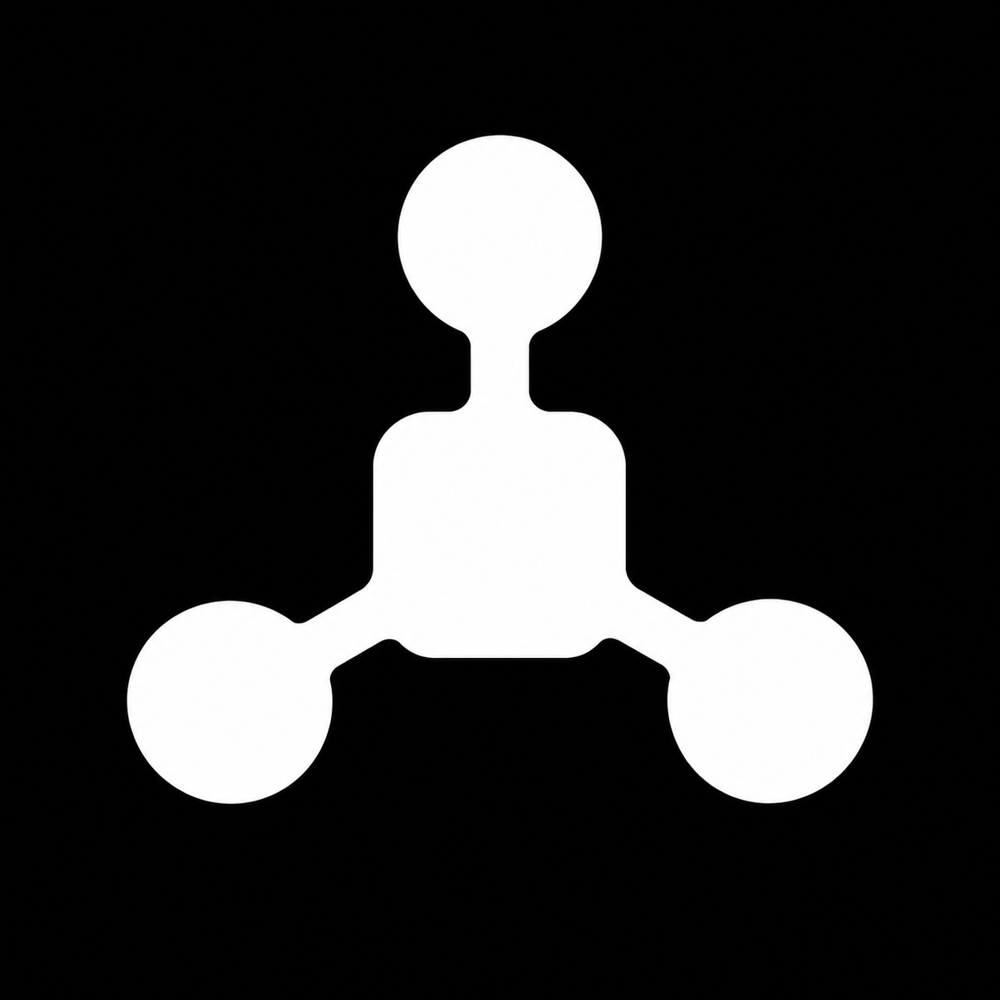
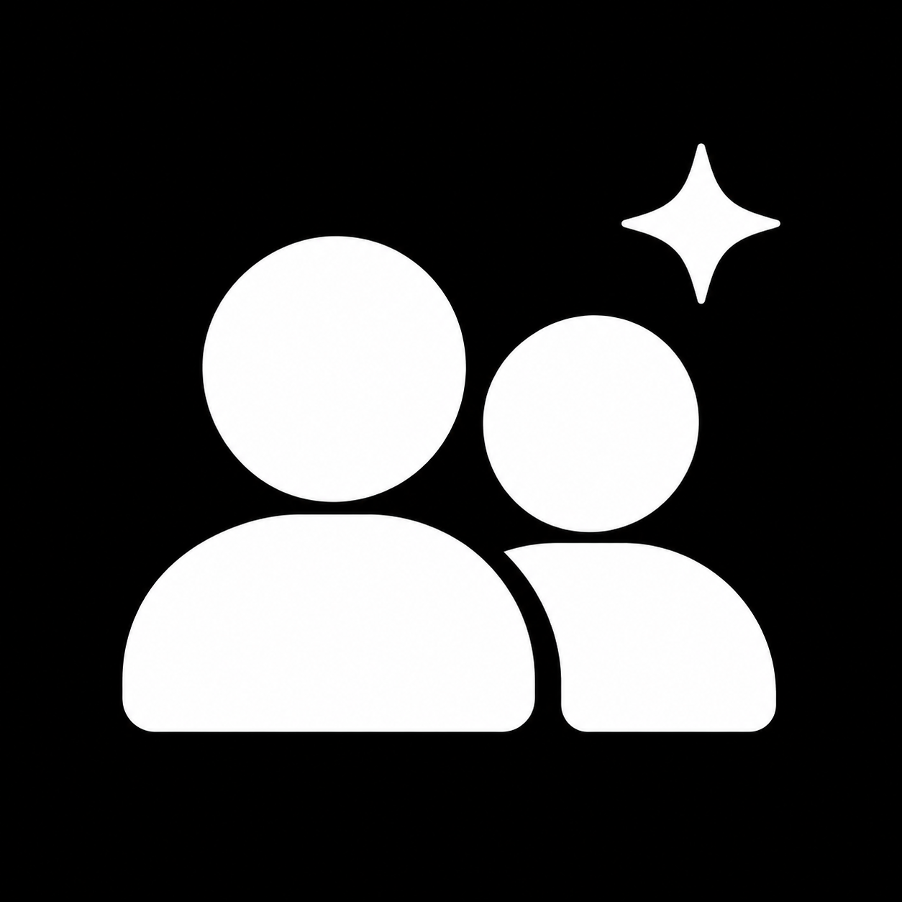
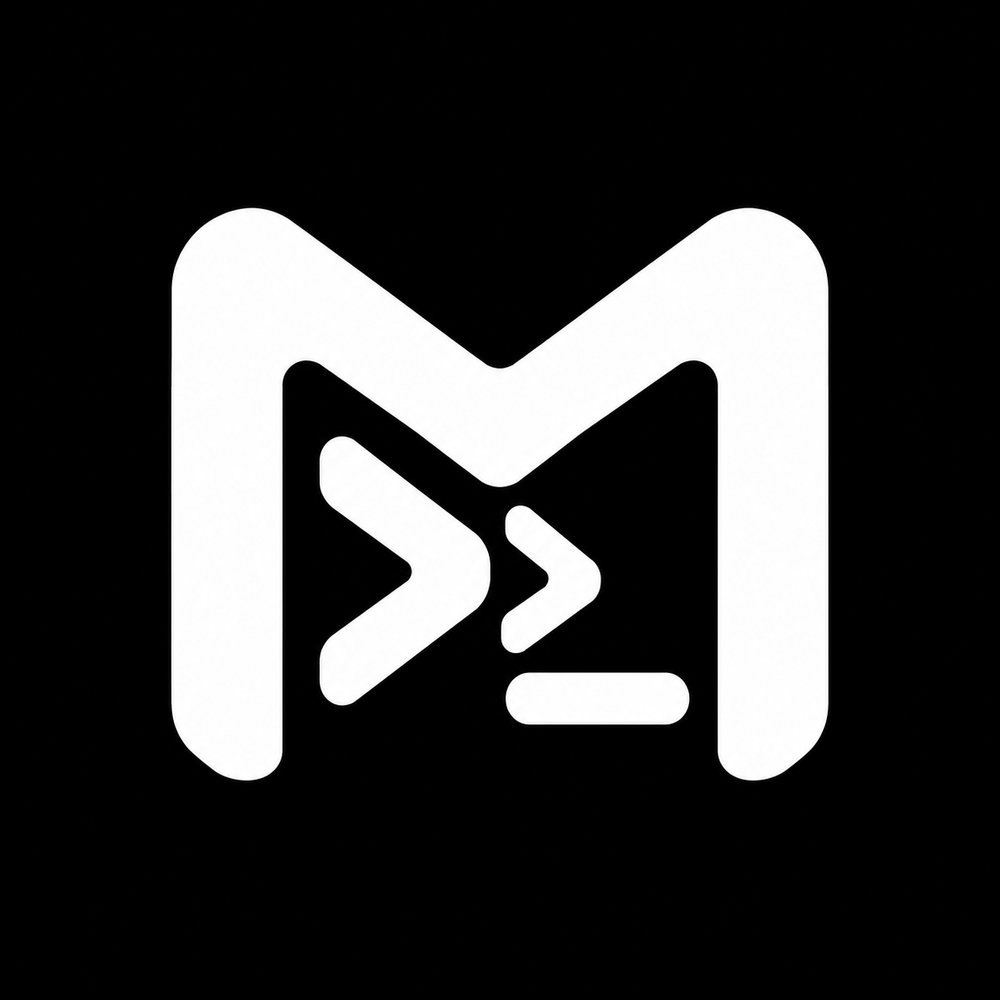
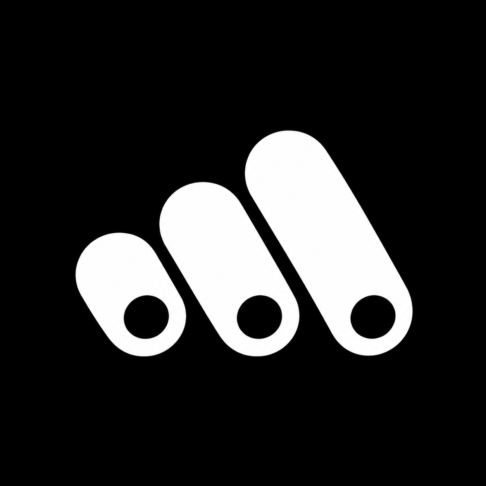

01 / Terminais02 / Contas M03 / Instancias conectadas
04 / Equipe
05 / Grade06 / Monograma
07 / Hub
08 / Contas + IA
09 / Terminal M
10 / ModulosClique em uma imagem para abrir o arquivo original.

01 / Terminais02 / Contas M03 / Instancias conectadas
04 / Equipe
05 / Grade06 / Monograma
07 / Hub
08 / Contas + IA
09 / Terminal M
10 / Modulos